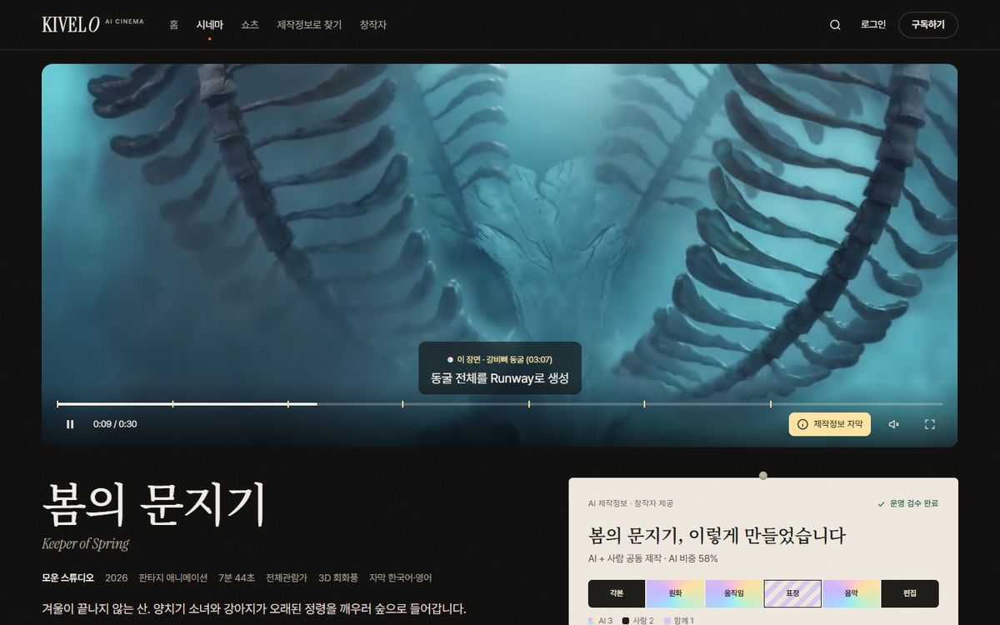
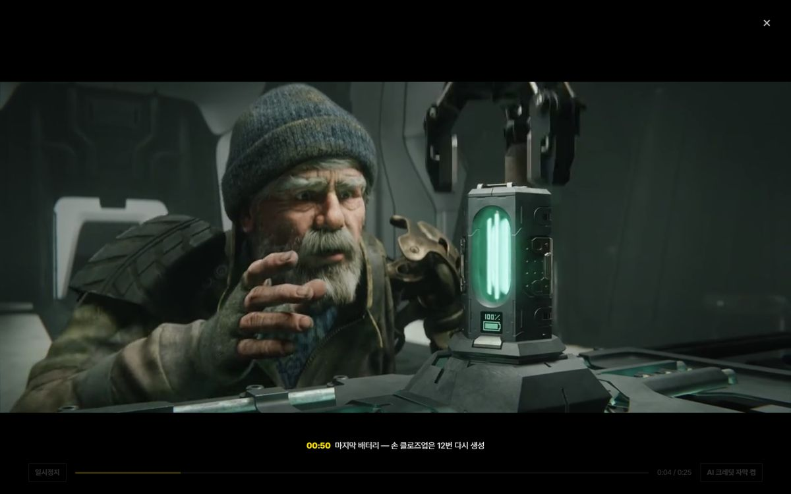
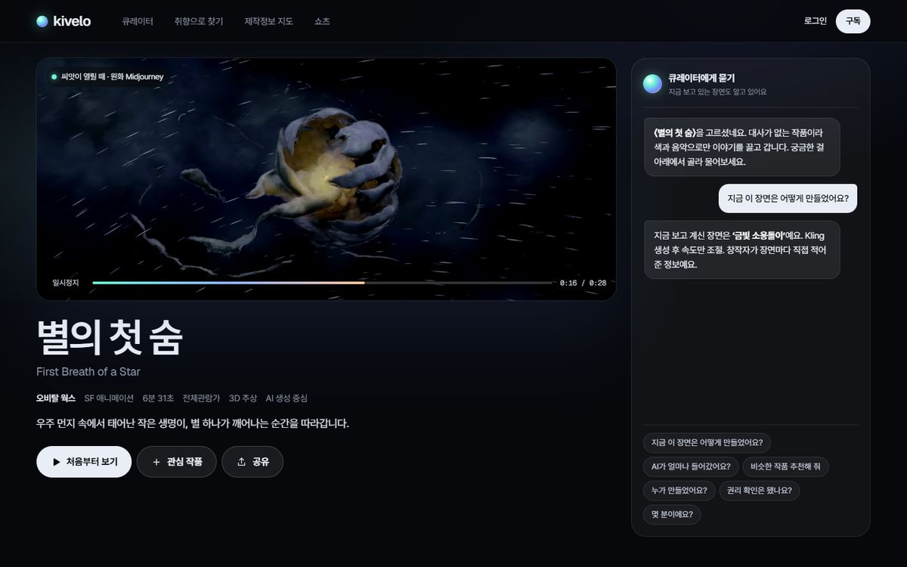
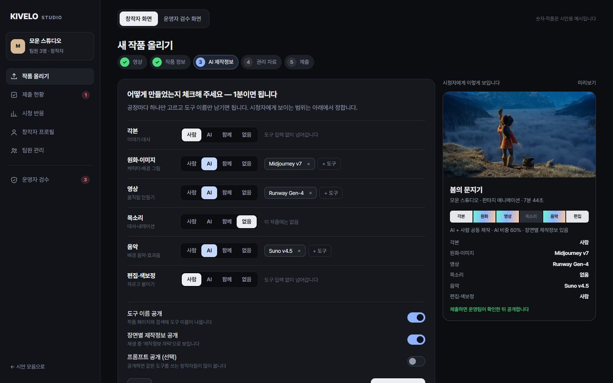
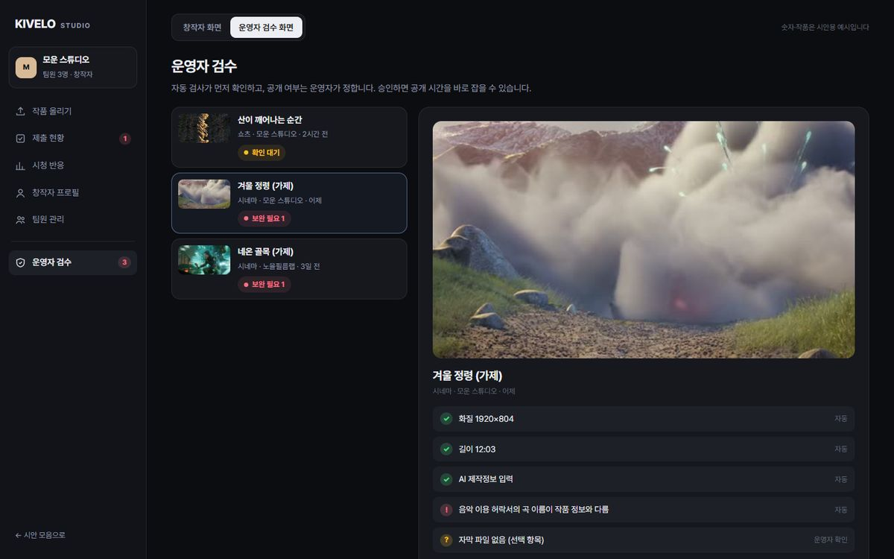

키벨로 플랫폼 디자인 시안 · 2026년 10월 · 어니스트패밀리
세 안 모두 실제로 눌러 볼 수 있는 화면입니다. 폰으로 열면 앱 화면, PC로 열면 웹 화면으로 보이고, 화면 아래 노란 점 버튼으로 시안 사이를 오갈 수 있습니다.
화면 속 작품 제목·창작자·제작정보·숫자는 화면을 보여 드리기 위한 예시입니다. 영상은 자유 이용이 허락된 공개 애니메이션(Blender 오픈 무비)에서 장면을 빌려 왔습니다.
세 안은 같은 숙제를 서로 다른 방법으로 풉니다.
흔한 OTT처럼 작품 줄을 세우면 금방 바닥이 보입니다. 적은 작품으로도 볼 것이 많아 보이고, 믿고 볼 수 있어야 합니다.
도구 이름을 늘어놓으면 아무도 읽지 않습니다. 한눈에 이해되고, 눌러서 비슷한 작품을 찾게 만들어야 합니다.
쇼츠는 입구, 시네마는 목적지입니다. 쇼츠만 보고 나가지 않게 이어 줘야 합니다.
등록이 번거로우면 창작자가 오지 않고, 정보가 부족하면 운영이 어렵습니다.
세 안에 기본으로 넣은 것 — 다크 테마 · PC와 폰 모두 · 무료(광고와 함께) / 구독(광고 없이) · 이어보기와 관심 작품 · 기기에서 ‘움직임 줄이기’를 켠 분께는 자동 재생과 움직임을 끕니다
들어오면 오늘의 상영작이 큰 화면으로 흐르고, 작품은 미술관 벽처럼 크기를 달리해 걸립니다. 재생 중에는 지금 장면을 무엇으로 만들었는지 자막처럼 보여 드립니다.

참고한 레퍼런스 — Detroit · Electra Filmworks · Flim · Daydream Player

참고한 레퍼런스 — Pantheon Media · NEON · Jason Bergh · 부산국제영화제
첫 화면은 질문 하나입니다. 기분이나 길이를 말하면 큐레이터가 세 편을 골라 이유와 함께 보여 주고, 작품을 보면서도 ‘이 장면 어떻게 만들었어요?’라고 물을 수 있습니다.

참고한 레퍼런스 — Dolsten & Co. · L.I.S.A. · Aether 1 · BEINGS
시청자 화면이 달라도 작품이 들어오는 길은 같습니다. 창작자는 체크 몇 번으로 올리고, 운영자는 확인할 곳만 보고 공개를 정합니다.


마음에 드는 안, 또는 섞고 싶은 부분 고르기
키벨로 로고·색과 실제 작품을 받아 첫 화면 다시 그리기
홈·작품 상세·재생·쇼츠·창작자·운영자 화면설계로 확정